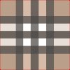
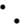
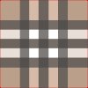
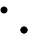
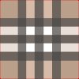
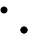

Wallpaper for websites
This is an example page accompanying the article Wallpaper for websites.
Click the images to change the background. Note the tessellation and how you can design anything that repeats.

 



This is an example page accompanying the article Wallpaper for websites.
Click the images to change the background. Note the tessellation and how you can design anything that repeats.

